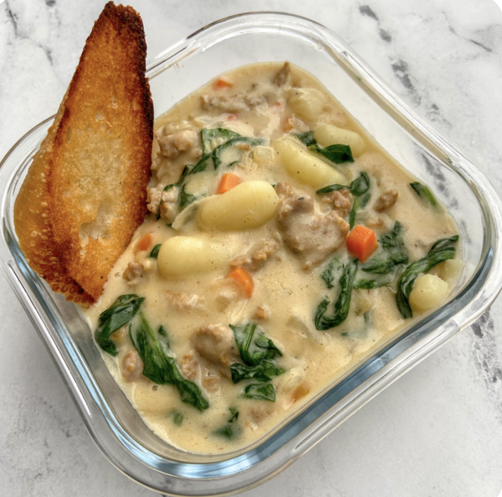

Description
Filled with pillowy gnocchi and spicy sausage, this gnocchi soup is the
perfect meal during a cold, winter day. Better yet? This gnocchi soup is
freezer-friendly, which makes this the perfect recipe to make a double
batch and freeze some for those days where you can't be bothered to cook.
Ingredients
- 3-4 boneless skinless chicken breasts - cooked and diced
- 1 stalk of celery - chopped
- ½ white onion - diced
- 2 teaspoons minced garlic
- ½ cup shredded carrots
- 1 tablespoon olive oil
- 4 cups low sodium chicken broth
- salt and pepper - to taste
- 1 teaspoon thyme
- 16 ounces potato gnocchi
- 2 cups half and half - see note
- 1 cup fresh spinach - roughly chopped
Steps
-
Heat olive oil in a large pot over medium heat. Add celery, onions,
garlic, and carrots and saute for 2-3 minutes until onions are
translucent.
-
Add chicken, chicken broth, salt, pepper, and thyme, bring to a boil,
then gently stir in gnocchi. Boil for 3-4 minutes longer before reducing
heat to a simmer and cooking for 10 minutes.
-
Stir in half and half and spinach and cook another 1-2 minutes until
spinach is tender. Taste, add salt and pepper if needed, and serve.